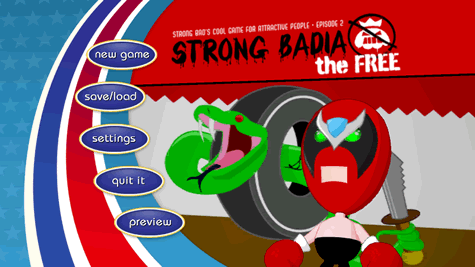

Scegli "StrongBadia the Free" dal tuo menu Wii. Verrà caricato lo schermo iniziale del canale. Per lanciare l'episodio, dirigi il puntatore su Start e premi  . Così apparirà il menù principale.
. Così apparirà il menù principale.

Il menù principale dà accesso alle seguenti opzioni:
- New Game: Inizia a giocare dall'inizio o gioca il tutorial.
- Save/Load: Salva una partita in corso o apri una partita salvata.
- Settings: Cambia il livello di indicazioni, attiva/disattiva i sottotitoli, testo pop up, e regola le impostazioni audio.
- Quit It: Esci dalla partita e torna al menu Wii.
- Preview: Guarda un'anteprima del prossimo episodio di Strong Bad's Cool Game for Attractive People.
Per scegliere una di queste azioni, punta sull'intestazione relativa e premi
.
Punta su New Game e premi . Puoi scegliere se iniziare l'episodio o giocare il tutorial. Se non hai mai visto questo tipo di giochi o se vuoi una descrizione dettagliata del funzionamento dei comandi, inizia col tutorial.
Punta su Save/Load e premi . Ci sono tre slot di salvataggio e un "salvataggio automatico" che si attiva a un certo punto del gioco. Ogni salvataggio automatico sovrascrive quello precedente quindi, se vuoi avere la possibilità di rigiocare varie parti del gioco più tardi, ricorda di salvarlo in un altro slot. Per salvare la partita, punta su Save vicino a uno degli slot e premi . Per caricare una partita salvata, punta su Load vicino allo slot relativo e premi .
Punta su Settings e premi . In questo schermo puoi cambiare le impostazioni di gioco. Per cambiare queste impostazioni, punta sui tasti a video e premi . Queste sono le possibili scelte:
- Give Hints: Imposta il livello di indicazioni, così se durante il gioco incontri una difficoltà, il programma sa quando indicarti la direzione corretta.
- Subtitles: Attiva/disattiva i sottotitoli che appaiono mentre parlano i personaggi.
- Pop-up Text: Attiva/disattiva il testo che appare quando porti il pointer su un oggetto col quale Strong Bad può interagire. (Anche se il testo pop-up è disattivato, il pointer si animerà quando è sopra a un oggetto che può essere usato).
- Music: Imposta il volume della musica di sottofondo del gioco.
- Voice: Imposta il volume del dialogo.
- Sounds: Imposta il volume degli effetti sonori del gioco (come i passi).
Punta su Quit It e premi . Questo schermo ti permette di uscire dal gioco. Puoi scegliere se tornare al menù principale del gioco o al menu Wii.
Punta sul Preview e premi per vedere un'anteprima del prossimo episodio di Strong Bad's Cool Game for Attractive People.